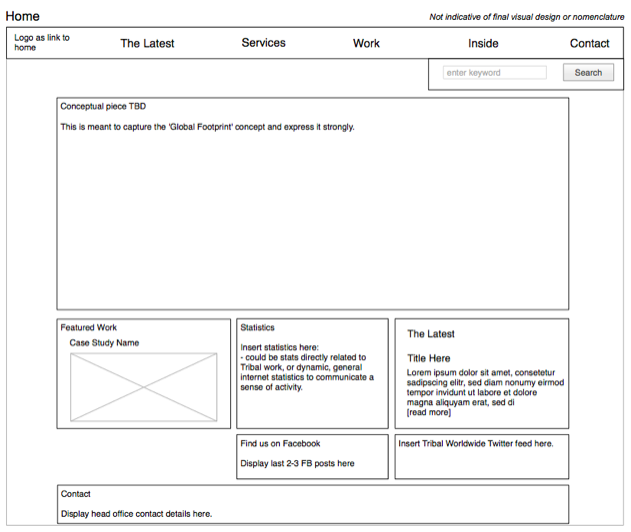
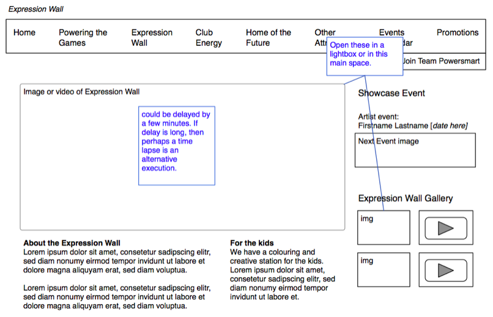
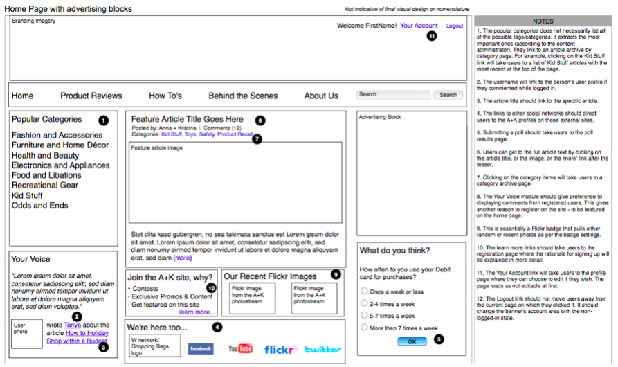
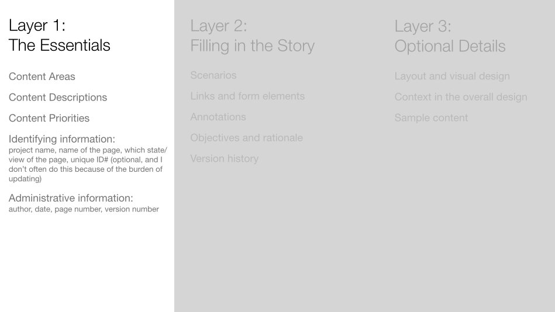
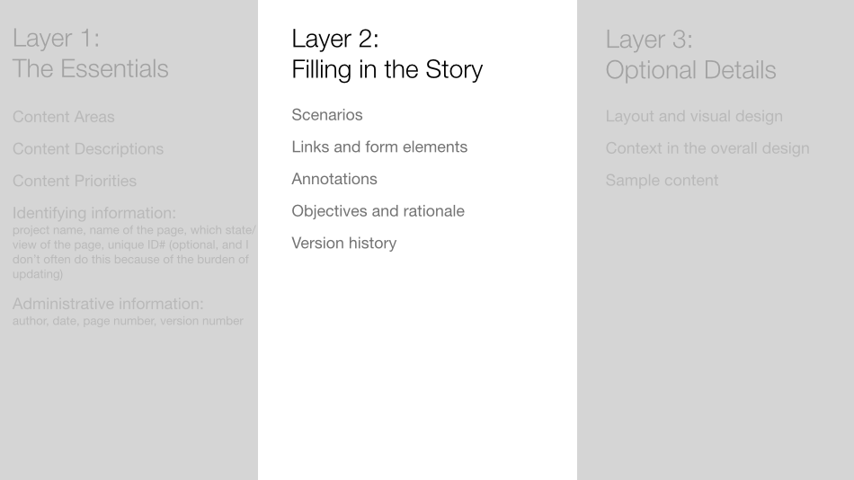
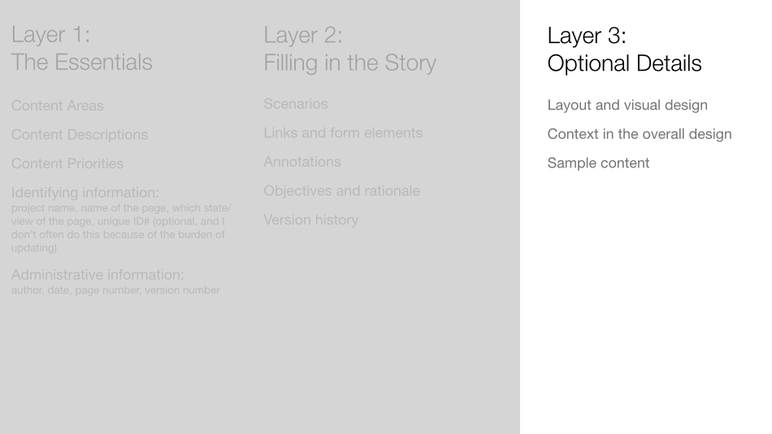
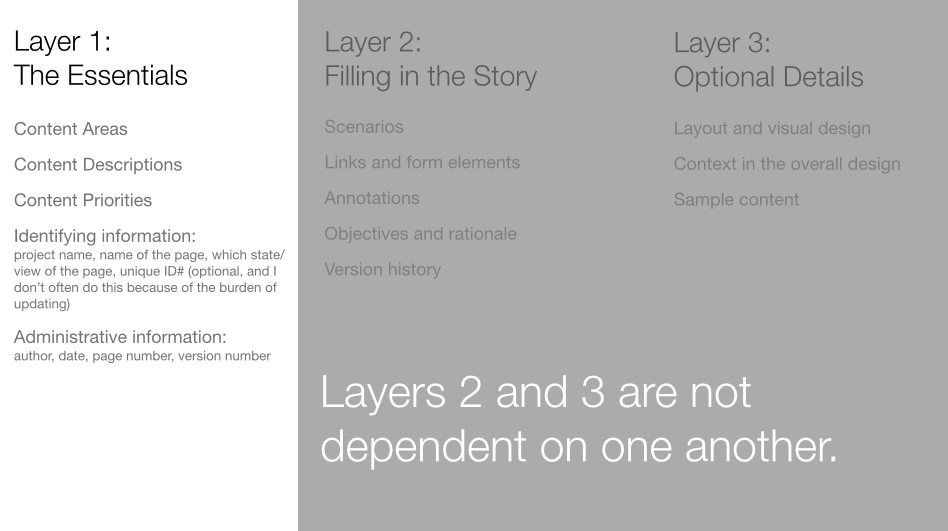
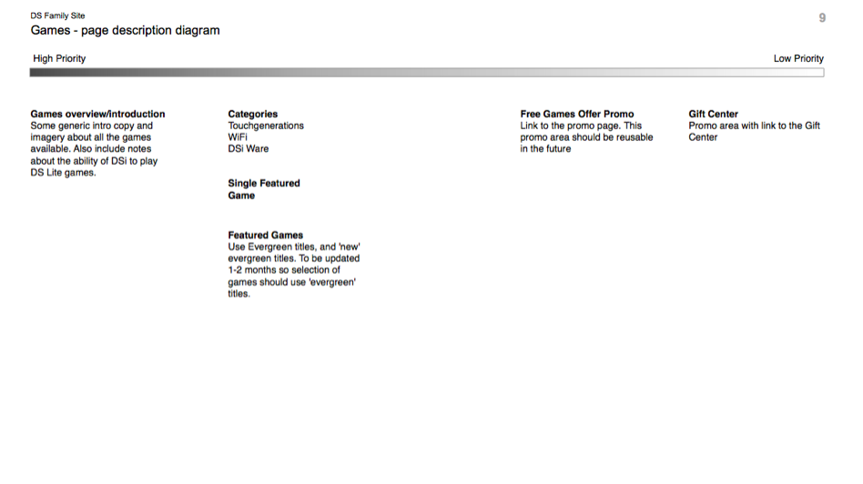
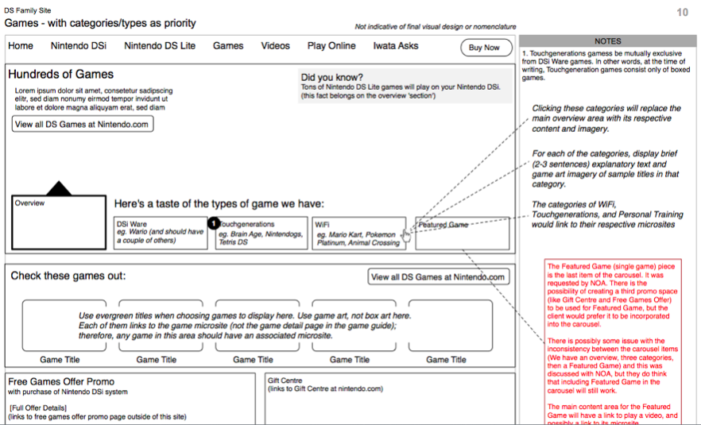

Wireframes
What Are Wireframes?
Wireframes are just another diagram made of boxes and lines. But these are different from the boxes and lines we used to make site maps and flow charts. One definition from the Communicating Design book reads
Who Uses Wireframes?
The primary audiences of wireframes are the builders - the developers and designers who will make your schematics into reality. Other stakeholders who will be interested in your wireframes include the project managers and clients.
Project managers will care that the wireframes are presented within the time and budgets that they are managing. They will also care that they are presented to the client in a clear and understandable format.
Clients, as important as they are because they pay the bills, are not who I consider the primary audience for wireframes (same goes for site maps and flow charts). The client has the greatest interest in the final product and the wireframes are just the means to that end. That said, you will likely have to present wireframes to the client in order to get their approval to move the project forward.
Challenges
I've mentioned this with other documents - that the best documents have a single purpose. But there is a heavy temptation to make wireframes to do many things, like:
- functionality
- initial visual design concepts
- user testing
- interaction models
- content priorities
- technical requirements and constraints
- show dynamically served content
- draft copy
- and more ...
You should decide on the main purpose for your document and try to stick to your guns. Doing too many things usually means that you're doing anything well for anybody. This should sound familiar - often the most difficult thing in creating documents is deciding and rationalizing what NOT to do with them. What this looks like in real life is talking people out of squeezing more information into your wireframes. One of my strategies is to convince people that they need a different diagram or format to achieve their other purposes.
Examples
Below is an example of a wireframe of a home page for a digital design agency's website

Below is an example of a wireframe for BC Hydro's Expression Wall website built for the 2010 Winter Olympics

Below is an example of a wireframe for Anna & Kristina, a duo of women who act as like consumer reports for women.

Three'ish Levels of Detail




A Wireframe Alternative - Page Description Diagram
Because the main point of a wireframe is to outline the content on the page with relative priorities, it could be expressed with the diagram seen below. It's called a page description diagram. Theoretically, it allows for the art director or designer more freedom to visually lay out the page.

But in my experience, the designers with whom I have worked prefer a more traditional wireframe. They do prefer that I have an initial stance on what the layout could be. I believe this is because most designers like a set of constraints and some inertia when they begin a project. Too much openness and freedom requires a lot more thought; they have to come up with their own constraints and that's not always easy. So instead of the page description diagram above, I turned it into the wireframe below.

Set Up Wireframe Template In Omnigraffle
- Tabloid page 11in by 17in, landscape orientation
- Snap to grid
- Title page
- Blank page
- Page template with notes column and 960 grid columns
- Revision table
- Shared layers with meta information: canvas number, project name, author, last modified date, page title, disclaimer statement
A quick aside: Toward a New Information Architecture
A solid article that describes IA by describing its history, current state, and possible future.
When To Do Wireframes
They usually happen early in the process, but after you have done some research to understand your users and competitive and comparative landscape. Usually you make them just after or at the same time as site maps. You might not create wireframes for all of the site pages at once. I have often created site maps for key pages such as home, product detail pages, product category pages, article detail pages, and any key interactive screens.

How Much Work Are They? It Depends...
The context will define the amount of detail, while the audience will define the kind of detail. In one context, you might create wireframes not to solve a problem, but to present possible solutions (some of them wrong) so that the problem can be better defined. This means you create 2-4 options for the team to discuss. While in another context, you will choose to create a few key pages and present them to the client to assess their reaction to your initial thoughts; this is part of failing fast. When it comes to audiences, a group of engineers and programmers will require a different kind of detail than will visual designers or the client. And a savvy client might less hand-holding than a client who in not familiar with interactive design projects and processes.
You might be asking, "No, really. How much work is involved with building wireframes?" There really is a wide range depending on the project requirements. I have created wireframe documents that were 4 pages long, while others were 75 pages long. I found that when there is a lot of work involved in a project, the majority of it actually comes during the revisions of the document after several rounds of reviews.
If they’re so much work, why not build in HTML?
You can try to do this - also called prototyping. Prototyping tools are available, and knowing how to code HTML and CSS and javascript is one of those tools. Wireframes are generally simpler to build (requiring less technical skill). They are generally simpler to update on an ongoing basis. Wireframes are also easier to add annotations; however, prototypes are a more accurate expression of the user experience. Prototypes will be covered later in this course material.
Presenting wireframes to clients
When you present your wireframes to clients, you will walk them through the pages, but not necessarily all of them. As mentioned earlier, you might only produce a few key pages to get a sense from the client whether it matches their expectations. In the meeting, you should stop often for questions - do this at each page break or perhaps even more often. Be clear in your descriptions of the parts of the page and where you have made some key decisions that will affect how they produce content, or will affect many other areas of the site, or are a significant departure from the way they currently do things. Many clients are not accustomed to wireframes and will need guidance to interpret what is happening on the page. I usually use a mix of three approaches: narrative (use a user flow), content type (e.g. all product detail pages, then all product category pages), and priority order (all important pages first such as the home page and the product detail pages, lesser pages would follow). The choice of which approach to take depends on the nature of the content and the requirements of the project and client.
Fake vs actual content
Use real content if you can get your hands on it, but don’t let it delay your progress too much. Real content is essential for making decisions about priorities of the items on each page. For example, critical and non-critical status messages - knowing some sample content might help you make a decision whether and where to include such messaging.
Wireframe Tips and Tricks
- Write scenarios or get them from your Business Analyst. This will help give you constraints and context - and that makes your job easier.
- List the screens necessary to complete. Do this on paper or on sticky notes.
- Use plain language
- Design for maintenance (shared layers, reference outside documents instead of duplicating content within your own)
- Sketch it out with paper and pencil first, even very rough ideas without much detail. Sketching gives you psychological momentum for wireframes.